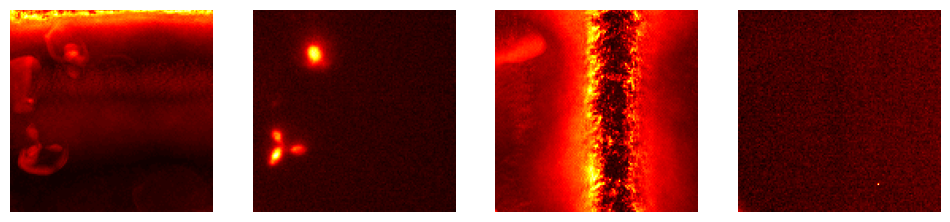

from bioMONAI.data import *
from bioMONAI.transforms import *
from bioMONAI.core import *
from bioMONAI.core import Path
from bioMONAI.data import get_image_files, get_target, RandomSplitter
from bioMONAI.nets import BasicUNet, DynUNet
from bioMONAI.losses import *
from bioMONAI.metrics import *
from monai.utils import set_determinism
from monai.transforms import ScaleIntensity
set_determinism(0)Demo: 2D image RI2FL
2D RI2FL demo
device = get_device()
print(device)cudaCreate Dataloader
bs, size = 16, 128
path = Path('../_data/Babesia/')
path_x = path/'RI'
path_y = path/'TRITC'
data_ops = {
'blocks': (BioImageBlock(cls=BioImageProject), BioImageBlock(cls=BioImage)),
'get_items': get_image_files,
'get_y': get_target(path_y, same_filename=False, signal_file_prefix='RI', target_file_prefix='TRITC'),
'splitter': RandomSplitter(valid_pct=0.2),
'item_tfms': [ScaleIntensity(minv=0.0, maxv=1.0),RandCrop2D(size), RandRot90(prob=0.5), RandFlip(prob=0.75)],
'bs': bs,
}
data = get_dataloader(
path_x,
show_summary=False,
**data_ops,
)
# print length of training and validation datasets
print('train images:', len(data.train_ds.items), '\nvalidation images:', len(data.valid_ds.items))train images: 220
validation images: 55Setting affine, but the applied meta contains an affine. This will be overwritten.data.show_batch(max_n=2, cmap='hot')Setting affine, but the applied meta contains an affine. This will be overwritten.
Load and train a 2D model
from bioMONAI.nets import Deeplab, DeeplabConfigconfig_2d = DeeplabConfig(
dimensions=2,
in_channels=1,
out_channels=1,
backbone="resnet10",
aspp_dilations=[1, 6, 12, 18]
)
model = Deeplab(config_2d)
loss = MSSSIML1Loss(2, levels=2) #CombinedLoss(alpha=0, beta=0.5)
metrics = [SSIMMetric, MSELoss]
trainer = fastTrainer(data, model, loss_fn=loss, metrics=metrics, show_summary=False)trainer.fit_flat_cos(500)trainer.show_results(cmap='gray')# trainer.save('tmp-model')Test data
Evaluate the performance of the selected model on unseen data. It’s important to not touch this data until you have fine tuned your model to get an unbiased evaluation!